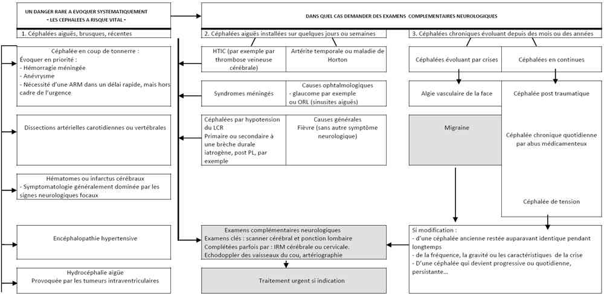

Bienvenue Sur Medical Education
Céphalées - Migraine
Spécialité : neurologie / symptômes /
Points importants
-
1 à 2% des motifs d'admission aux urgences
-
Femme > homme
-
Apparait le plus souvent chez le sujet jeune
-
Rapport de 1/10 entre le jeune et le sujet = 60 ans en terme de gravité
-
80% des céphalées sont récentes (< 15 jours)
-
De causes variées, de la plus banale à la plus grave
-
Certaines céphalées secondaires peuvent engager le pronostic vital
-
L'intensité de la céphalée n'est pas forcément liée à la gravité de la situation
-
Devant une céphalée d'installation récente, penser d'abord à une céphalée secondaire
-
Chez un patient déjà céphalalgique, il est souvent difficile de reconnaître une céphalée nouvelle
Présentation clinique / CIMU
SIGNES FONCTIONNELS
Présentation clinique / CIMU
SIGNES FONCTIONNELS
Interrogatoire : temps essentiel du diagnostic
- Il va orienter le diagnostic et guider l'approche thérapeutique
- Pas aussi simple que ça, il y a des pièges
-
Il doit être adapté à la situation :
- complet et standardisé dans le cadre d'une consultation
- rapide et simplifié dans le cadre de l'urgence
- La céphalée est par essence subjective : elle peut être exprimée de façon très différente selon les sujets
- Nécessité de mener un interrogatoire méthodique, systématique devant un céphalalgique
Caractériser la céphalée : 10 questions
- 1. Depuis quand ?
- 2. Début brutal ou non ? (la céphalée est définie comme brutale quand le patients est capable de préciser le début des céphalées par rapport à un événement particulier de la vie quotidienne)
- 3. Par crises ou en continu ?
- 4. Où avez-vous mal ? (localisation initiale et irradiation)
- 5. Durée des crises ?
- 6. Fréquence des crises ?
- 7. Type de douleur : pulsatile, étau, broiement, brûlure, décharge électrique ?
- 8. Légère, modérée, sévère, très sévère ?
- 9. Facteurs déclenchants ?
- 10. Facteurs calmants ou aggravants?
Plusieurs types de céphalées possibles chez un même patient
- Exemple : migraine et céphalée de tension
Signes d'accompagnement
- Nausées, vomissements
- Gêne à la lumière, au bruit (photo, phonophobie)
- Larmoiement, rhinorrhée
Signes d'alarme
- Installation brutale d'une céphalée sévère
- Aggravation progressive d'une céphalée permanente
- Déclenchement de la céphalée par un effort physique, le coït, la toux
-
Présence de signes associés :
- somnolence, obnubilation, pertes de mémoire
- myalgies et arthralgies
- altération de l'état général, amaigrissement
- troubles visuels progressifs
CONTEXTE
Terrain
- Age
- Tendances addictives
Antécédents
- Avez-vous déjà eu ce même type de mal de tête ? (âge de début des céphalées, si > 60 ans = pas migraine)
- ATCD familiaux
- ATCD personnels de douleurs chroniques
- Autres pathologies : diabète, HTA, pathologie vasculaire, obésité
- Co-morbidité psychiatrique : anxiété chronique, dépression, attaques de panique
Traitement
- Traitement déjà pris et leurs effets (peuvent être la cause d'un auto-entretien)
Facteurs favorisants
- Evénements de vie
- Climat professionnel et familial
EXAMEN CLINIQUE
-
Comportement du patient en crise :
- prostré ou agité
- allongé ou debout
- Palpation des globes oculaires, des sinus, des artères temporales, des muscles péri crâniens
- Auscultation des artères cervicales
-
Examen neurologique :
- conscience et nuque
- paires crâniennes
- rechercher un déficit neurologique (Claude Bernard Horner = ptôsis + myosis + énophtalmie = dissection carotide ; paralysie du III = 1er signe d'un anévrisme de la carotide terminale)
- Examen général infectieux, cardio-vasculaire
-
Signes d'alarme :
- fièvre
- raideur de la nuque
- troubles moteurs ou sensitifs focalisés
- asymétrie des réflexes ostéo-tendineux, signe de Babinski
- oedème papillaire
- asymétrie pupillaire
- artère temporale dure et douloureuse à la palpation
EXAMENS PARACLINIQUES SIMPLES
- Température
AU TOTAL 4 SITUATIONS DIFFERENTES
La céphalée est aiguë et nouvelle
- Elle doit être à priori considérée comme secondaire
- Si le sujet est un céphalalgique chronique, elle est différente de sa céphalée habituelle
La céphalée est récente, d'installation progressive
- Elle est permanente, d'aggravation progressive
- Isolée ou accompagnée de signes généraux ou neurologiques
- Elle est presque toujours secondaire
La céphalée est chronique, évoluant par crises récurrentes
- Elle évolue par crises ou par périodes douloureuses, entre intervalles libres
- Il s'agit presque toujours de céphalées primaires (migraine ou CTE)
La céphalée est chronique quotidienne
- CCQ : > 15 jours/mois, depuis plus de 3 mois
- Co-morbidité anxio-dépressive et abus médicamenteux
CIMU
- Tri 2 si troubles visuels, douleur intense, crise inhabituelle pour le patient aux ATCD de migraine, 1re crise
- Tri 3 pour les autres
Signes paracliniques
CEPHALEES PRIMAIRES
Migraine
- Toute migraine typique, à examen neurologique normal, aux caractéristiques inchangées, n'a pas d'indication à neuro-imagerie
-
Indications de l'imagerie :
- céphalée d'apparition brutale
- aura brusque ou prolongée ou toujours du même côté
- aura hémiplégique
- céphalée récente différente
- anomalie à l'examen clinique
CEPHALEES SECONDAIRES
- Devant toute céphalée récente inhabituelle (céphalée secondaire) on devra demander en urgence les examens suivants
Biologiques
- VS et CRP
- Hémostase
- PL (après scanner)
- HbCO
Imagerie
- Scanner cérébral
- IRM/ARM/écho-doppler/rarement artériographie
Diagnostic étiologique
CEPHALEE RECENTE ET INHABITUELLE = CEPHALEES SECONDAIRES
Début brutal : causes vasculaires
-
Hémorragie méningée :
- très brutale, d'emblée maximale
- caractère inhabituel et résistant aux antalgiques non morphiniques
- syndrome d'irritation méningée = nausées, vomissements
- PL si clinique évocatrice et TDM négatif ou douteux
- PL : GR = visuel négatif/GR > 1000/mm3 = visible et significatif
- xanthochromie = visuel négatif/délai 12 h/spectrophotomètre
- autre imagerie neurovasculaire si TDM normal :
-
FDR :
- tabac
- HTA
- OH
- ATCD d'hémorragie méningée
- polykystose rénale
- drépanocytose
- maladie du TC
-
TDM dans l'HM :
- sensibilité diminue rapidement (5 à 10% /j) avec le temps (12 premières heures = 100%)
- TDM normal à J7 = aucune valeur pour éliminer le diagnostic
- à J3 = 74% (si normal = PL)
- xanthochromie : pendant 2 semaines 100% positif si HM
- pas d'évaluation pour faire une PL d'emblée
- AVC
-
Dissection artérielle :
- douleur unilatérale en général, homolatérale à la dissection
- cervicalgie
- doppler artériel cervical
- TDM, IRM ou angioIRM (direct si signe de localisation)
- traitement : repos, AC
-
Infarctus cérébral :
- céphalées avant, pendant ou après
- infarctus constitué
- AIT
- lacunes
- absence de parallélisme anatomo-clinique
- TDM : rien souvent les 3 premières heures
-
Thrombose veineuse cérébrale :
- signes d'HTIC
- déficit focal
- T°
- grossesse, post-partum, tabac, pilule
-
TDM : anormal dans 80% des cas :
- non spécifique : petits ventricules, sillons corticaux mal visibles
- plus évocateur : infarctus veineux triangulaire à base corticale
- après injection : signe du delta
-
IRM si besoin : examen de choix :
- effet de masse
- hématome intra parenchymateux entouré d'oedème
- image directe de thrombus dans un sinus veineux
-
Anévrysme artériel :
- hémicrânie
- nausées, vomissements
- paralysie du III
- TDM et PL normaux
- IRM
- Vasoconstriction cérébrale réversible
Début progressif
- Méningites et méningo-encéphalites
-
HTIC :
- céphalées diffuses, continues, dès le matin
- vomissements
- ralentissement intellectuel
- troubles visuels
-
Hypotension intracrânienne :
- céphalées orthostatiques bilatérales
- Horton
- Sinusites bloquées frontales, ethmoïdales
- Céphalées liées aux toxiques et médicaments (CO)
- Céphalées associées à des infections générales
- Céphalées associées à des troubles métaboliques
- Céphalées secondaires à une HTA : toxique, médicamenteuse, phéochromocytome, maligne
CEPHALEES CHRONIQUES EVOLUANT PAR CRISES RECURRENTES = CEPHALEES PRIMAIRES
Migraine sans aura
- Au moins 5 crises
- Crises durant de 4 à 72 h (sans traitement)
- Plurimensuelle
-
Céphalées ayant au moins 2 caractéristiques :
- unilatéralité
- pulsatile
- caractère modéré ou sévère
- aggravation par les activités physiques de routine.
-
Pendant les céphalées, présence d'au moins 1 des caractères suivants :
- nausées et/ou vomissements
- photophobie et phonophobie
- L'examen clinique est normal entre les crises
- Et : histoire, examen clinique et neurologique : pas d'élément pour un autre type de céphalées
Migraine avec aura
- 4 types d'aura (visuelles, sensitives, aphasiques, motrices)
- Au moins 2 crises
-
Au moins 3 des 4 caractéristiques suivantes :
- un ou plusieurs symptômes de l'aura totalement réversibles
- développement du symptôme de l'aura sur plus de 4 min
- durée de chaque symptôme = 60 min si plusieurs signes, la durée acceptée est augmentée en conséquence
- Céphalée fait suite à l'aura après un intervalle libre = 60 min
- L'examen clinique est normal entre les crises
Algie vasculaire de la face
- Douleurs sévères unilatérales, orbitaires, supra-orbitaires et/ou temporales durant de 15 à 180 min sans traitement
- Pluriquotidienne (1 à 8/jour)
-
Associée à un des caractères suivants survenant du côté de la douleur :
- injection conjonctivale
- larmoiement
- congestion nasale
- rhinorrhée
- sudation du front ou de la face
- myosis
- ptôsis
- oedème face
Céphalées de tension : diagnostic d'élimination
- Durent 30 min à 7 jours
- Périodicité < 15jours/mois
Autres céphalées primaires
- Durée variable
- Périodicité selon les circonstances (effort, toux, orgasme [lourdeur progressive, explosive, posturale], sommeil, céphalées par compression externe, au froid [externe, ingestion de glace])
EN FONCTION DES SIGNES ACCOMPAGNATEURS
Nausées, vomissements
- Migraine... mais aussi syndrome méningé et HTIC
Photophobie, phonophobie
- Migraine... mais aussi syndrome méningé, céphalée de tension et AVF
Allodynie
- Migraine... mais aussi tout douloureux chronique
Phosphénes, flou visuel, scotome scintillant
- Migraine avec aura... mais aussi AVF
Signes végétatifs (larmoiement, rhinorrhée...)
- AVF et autres CTAs... mais aussi migraine et névralgie du V
Troubles cognitifs
- Migraine... mais aussi HTIC
Traitement
-
Les céphalées secondaires nécessitent un traitement rapide
MIGRAINE
Crise simple chez un patient qui n'a pas pris de médicament avant
- Patient mis dans une pièce sombre et calme
- Aspégic® 1 g per os ou AINS per os
- Associés à Primpéran ou Vogalène suppositoire si vomissements
Le patient a pris des médicaments avant de venir aux Urgences
-
Recours à un antimigraineux spécifique en privilégiant la voie intranasale ou SC. :
- imigrane® spray nasal 20 mg
- imiject®
-
En cas de contre indication (âge...) :
- DHE par voie nasale ou Injectable
- Associer Primpéran ou Vogalène suppositoires si vomissements
Si échec ou contre-indications aux antimigraineux spécifiques
- Proparacétamol (Perfalgan®) 1 g en perfusion courte sur 20 min en l'absence d'automédication excessive
- Kétoprofène (Profenid 100®) en perfusion
- Néfopam (Acupan®) en perfusion
- Associer Tranxène® 20 ou 50 mg selon l'état d'anxiété du patient
- Primpéran® 10 mg dans la perfusion si nausées ou vomissements
Si échec et +/- abus d'antalgiques
- Amitriptyline (Laroxyl®) 50 mg dans une perfusion à passer lentement en 2 h
- Associé à clonazépam (Rivotril®) surtout s'il existe avec la migraine des céphalées de tension
Cas particuliers
-
Femme enceinte ou allaitant :
- oxygène à 10 L/min pendant 30 min, si échec : Pro-Dafalgan®
-
Enfant :
- outre les antalgiques simples, Imigrane® spray nasal 10 mg, prévoir au plus vite relaxation
Surveillance
CLINIQUE
-
PA, FC, conscience, intensité douloureuse/h
-
T°/4 h
Devenir / orientation
QUAND REFERER UNE CEPHALEE AU SPECIALISTE ?
-
Céphalée atypique n'entrant dans aucun grand cadre diagnostique
-
Suspicion d'une céphalée secondaire
-
Nécessité d'un bilan spécialisé ORL, ophtalmo ou stomatologique
-
Echec de 2 traitements de crise chez un migraineux
-
Echec de 2 traitements de fond chez un migraineux
-
Céphalée associée à un abus médicamenteux
-
Demande du patient qui exprime une insuffisance de prise en charge
CRITERES D'ADMISSION
-
Hospitalisation pour poursuivre le traitement si état de mal migraineux
CRITERES DE SORTIE
-
Amendement de la douleur
-
Examens normaux, après une prévention du syndrome post-PL de quelques heures en cas de PL
ORDONNANCE DE SORTIE POUR LE MIGRAINEUX
-
Aspégic 1000 mg : 1 sachet, si douleur, maximum 3 sachets/j au milieu des repas 5 jours, en l'absence d'ulcère de l'estomac
-
Primpéran 10 mg : 1 cp trois fois/j si nausée ou vomissement
RECOMMANDATIONS DE SORTIE POUR LE MIGRAINEUX
Devenir / orientation
QUAND REFERER UNE CEPHALEE AU SPECIALISTE ?
- Céphalée atypique n'entrant dans aucun grand cadre diagnostique
- Suspicion d'une céphalée secondaire
- Nécessité d'un bilan spécialisé ORL, ophtalmo ou stomatologique
- Echec de 2 traitements de crise chez un migraineux
- Echec de 2 traitements de fond chez un migraineux
- Céphalée associée à un abus médicamenteux
- Demande du patient qui exprime une insuffisance de prise en charge
CRITERES D'ADMISSION
- Hospitalisation pour poursuivre le traitement si état de mal migraineux
CRITERES DE SORTIE
- Amendement de la douleur
- Examens normaux, après une prévention du syndrome post-PL de quelques heures en cas de PL
ORDONNANCE DE SORTIE POUR LE MIGRAINEUX
- Aspégic 1000 mg : 1 sachet, si douleur, maximum 3 sachets/j au milieu des repas 5 jours, en l'absence d'ulcère de l'estomac
- Primpéran 10 mg : 1 cp trois fois/j si nausée ou vomissement
RECOMMANDATIONS DE SORTIE POUR LE MIGRAINEUX
A court terme
- Apprendre au patient à traiter une récurrence ou une récidive avec un traitement d'urgence
- Prévention du syndrome post-PL
A long terme
- Adresser le patient à son généraliste ou à un neurologue pour optimiser son traitement de fond
- Expliquer qu'il s'agit d'une maladie bénigne ne nécessitant pas d'examens complémentaires
-
Expliquer qu'il ne sera pas nécessaire de revenir aux urgences sauf :
- crise de migraine bien traitée et ne cédant pas aux traitements habituels
- apparition de manifestations neurologiques anormales
- reprise des céphalées sur un mode inhabituel
Mécanisme / description
DEUX THEORIES CLASSIQUES CONCERNANT LA MIGRAINE
La théorie vasculaire
- Elle associe la migraine à une dysrégulation vasculaire
- L'aura résulte d'une ischémie transitoire, induite par une vasoconstriction et la céphalée témoigne d'une vasodilatation « rebond» des vaisseaux intra et extra - cérébraux qui active les nocicepteurs vasculaires
- Les effets vasoconstricteurs de l'ergotamine et des triptans sont compatibles avec cette hypothèse, mais ces produits ont aussi de puissants effets inhibiteurs sur la transmission dans le système trigémino-vasculaire
Le dysfonctionnement neuronal
- Inversement, selon cette théorie, c'est un dysfonctionnement neuronal qui est responsable de la migraine et les évènements vasculaires ne sont que secondaires
- La neuro-imagerie fonctionnelle a en effet montré une diminution modérée du débit sanguin cérébral n'atteignant pas le seuil ischémique - dans le cortex occipital controlatéral pendant des auras visuelles unilatérales et spontanées, suivie bien après le début de la céphalée d'une vasodilatation
- Néanmoins, comme la précédente, la théorie neuronale ne permet pas d'expliquer toute la clinique de la migraine
- NB : Il est très probable que les crises migraineuses relèvent à la fois d'évènements vasculaires et d'évènements neuronaux dont les responsabilités relatives varient d'un patient à l'autre
Algorithme
-
Algorithme céphalées
 _692 Algorithme Algorithme : céphalées
Auteur(s) : Dominique VALADE